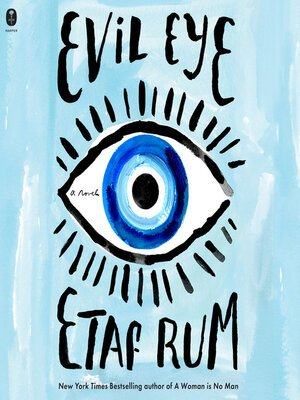
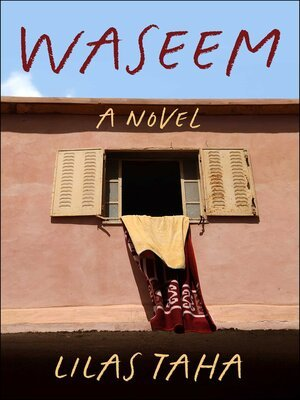
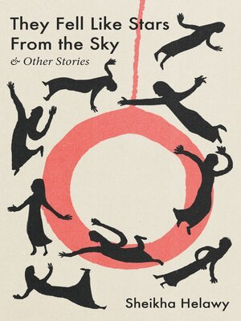
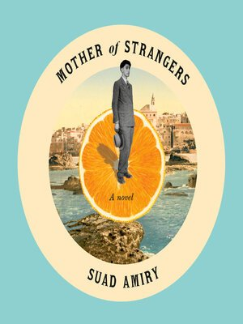

#2
Salt HousesHala Alyan
AudiobookLiterary
Available now: Audiobook
Series: Standalone
Author: Palestinian-American writer and poet

#3
What Will People Think?Sara Hamdan
EbookHumor
Available now: Ebook
Series: Standalone
Author: Palestinian-American author (Macmillan bio)

#5
Enter GhostIsabella Hammad
EbookLiterary
Available now: Ebook
Series: Standalone
Author: British-Palestinian novelist

#7
Fencing with the KingDiana Abu-Jaber
Ebook + AudiobookLiterary
Series: Standalone
Author: American author; Jordanian father whose mother was Palestinian, from Jerusalem (Palestinian descent through paternal grandmother)
#8
The ParisianIsabella Hammad
EbookHistorical
Available now: Ebook
Series: Standalone
Author: British-Palestinian novelist

#9
The Arsonists' CityHala Alyan
AudiobookLiterary
Available now: Audiobook
Series: Standalone
Author: Palestinian-American writer and poet
#10
The Stars Are Not Yet BellsHannah Lillith Assadi
AudiobookLiterary
Available now: Audiobook
Series: Standalone
Author: American novelist; Palestinian father born in Safed (Wikipedia)

#12
A Rebel's History of MarsNadia Afifi
EbookScience Fiction
Available now: Ebook
Series: Standalone
Author: Self-identifies as Palestinian (author site)

#13
They Fell Like Stars from the Sky & Other StoriesSheikha Helawy
EbookShort Stories
Available now: Ebook
Series: Standalone story collection
Author: Palestinian writer born into a Bedouin family near Haifa

#14
Mother of StrangersSuad Amiry
AudiobookHistorical
Available now: Audiobook
Series: Standalone
Author: Palestinian author and architect living in Ramallah

#16
The RemainderAlia Trabucco Zerán
EbookMystery
Available now: Ebook
Series: Standalone
Author: Chilean writer; mother Faride Zerán is daughter of a Druze man from Palestine (Palestinian descent via maternal great-grandfather)
#17
Fractured DestiniesRabai al-Madhoun
EbookHistorical
Available now: Ebook
Series: Standalone
Author: Palestinian novelist, born in al-Majdal; family expelled in 1948


#19
Seeing RedLina Meruane
EbookLiterary
Available now: Ebook
Series: Standalone
Author: Chilean writer of Palestinian descent (Wikipedia category; author of Volverse Palestina)
#20
No Sex in the CityRanda Abdel-Fattah
EbookRomance
Available now: Ebook
Series: Standalone
Author: Australian writer of Palestinian and Egyptian descent